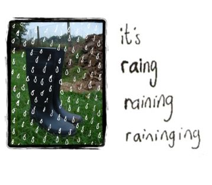

|
 The rain has begun. Today I walked into Wilkinsons and asked as shop assistant if they sold wellies. It sounded very funny and I nearly laughed in her face. The digging season has begun so I thought it was time to invest in some sensible footwear. So I went to try them out tonight. Got a little bit of digging done but the ground is still surprisingly hard. |